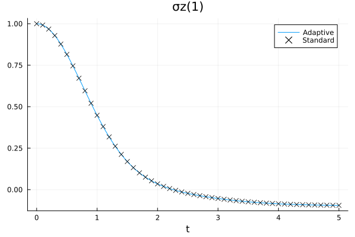
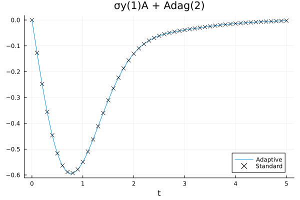
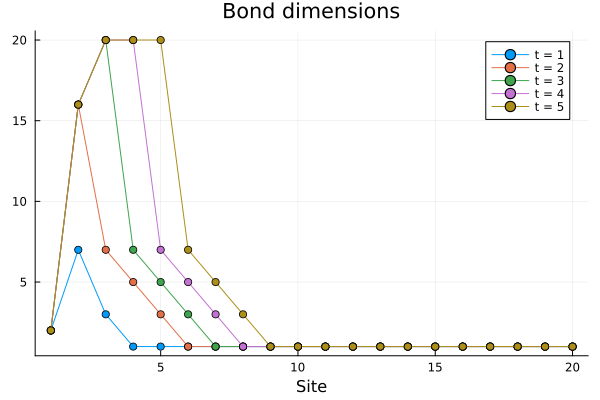

Adaptive TDVP1
The TDVP1 algorithm features a fixed bond dimension, that is, the size of the MPS does not increase during the time evolution. As such, the bond dimensions must be chosen before starting the algorithm, which means that we need to estimate them beforehand, or repeat the simulation with a higher dimension enough times until the results converge. The adaptive TDVP1 algorithm is a modification of the original TDVP1 which is capable of increasing the bond dimensions during the evolution, using a subspace-expansion technique. This algorithm is implemented in the adaptivetdvp1! function, which follows [4].
MPSTimeEvolution.adaptivetdvp1! — Function
adaptivetdvp1!([solver,] state::MPS, H::MPO, dt, tmax; kwargs...)
adaptivetdvp1!([solver,] state::MPS, H::Vector{MPO}, dt, tmax; kwargs...)Like tdvp1!, but dynamically increases the bond dimensions of the MPS, before each step of the time evolution, until a convergence criterium is met.
In adddition to the mandatory or optional keyword arguments of tdvp1!, this method requires the following additional arguments.
convergence_factor_bonddimcontrols the precision of the adaptation algorithm (lower values will lead to higher bond dimensions).maxbonddimsets an upper limit beyond which the algorithm will not try to increase the bond dimension further.
For an explanation of the other arguments, see tdvp1!.
MPSTimeEvolution.adaptivetdvp1vec! — Function
adaptivetdvp1vec!([solver,] state, L, dt, tmax; kwargs...)Like tdvp1vec!, but dynamically increases the bond dimensions of the MPS, before each step of the time evolution, until a convergence criterium is met.
In adddition to the mandatory or optional keyword arguments of tdvp1vec!, this method requires the following additional arguments.
convergence_factor_bonddimcontrols the precision of the adaptation algorithm (lower values will lead to higher bond dimensions).maxbonddimsets an upper limit beyond which the algorithm will not try to increase the bond dimension further.
For an explanation of the other arguments, see tdvp1vec!.
MPSTimeEvolution.adaptiveadjtdvp1vec! — Function
adaptiveadjtdvp1vec!(
[solver,] operator, initialstate::MPS, L, dt, tmax, meas_stride; kwargs...
)
adaptiveadjtdvp1vec!(
[solver,] operator, initialstates::Vector{MPS}, L, dt, tmax, meas_stride; kwargs...
)Like adjtdvp1vec!, but dynamically increases the bond dimensions of the MPS, before each step of the time evolution, until a convergence criterium is met.
In adddition to the mandatory or optional keyword arguments of adjtdvp1vec!, this method requires the following additional arguments.
convergence_factor_bonddimcontrols the precision of the adaptation algorithm (lower values will lead to higher bond dimensions).maxbonddimsets an upper limit beyond which the algorithm will not try to increase the bond dimension further.
For an explanation of the other arguments, see adjtdvp1vec!.
This package implements an adaptive variant for the tdvp1!, tdvp1vec!, adjtdvp1vec! functions. They all work in the same way with respect to the original (non-adaptive) version of the algorithm, therefore in this tutorial we will focus only on the first one.
Let's test this function on a simple physical model, a spin coupled to a bosonic bath
\[\begin{gather*} H = H\Sys + H\Env + H\Int,\\ H\Sys = \frac{\omega_0}{2} \sigma_z,\\ H\Env = \int_0^{\omega\cutoff} \adj{a_\omega} a_\omega\phantomadj\,\dd\omega,\\ H\Int = \sigma_x \otimes \int_0^{\omega\cutoff} (a_\omega\phantomadj + \adj{a_\omega}) \sqrt{J(\omega)} \,\dd\omega, \end{gather*}\]
with an Ohmic spectral density function \(J(\omega) = 2\pi \alpha \omega\) on \([0,\omega\cutoff]\), and the spin starting from the up state the bosons from thermal equilibrium:
\[\rho_0 = \proj{\spinup} \otimes \frac{1}{\exp(-\beta H\Env)} \exp(-\beta H\Env).\]
We transform this system into a form which is more suitable to the MPS formalism with a chain-mapping algorithm, specifically T-TEDOPA, that replaces such a continuous environment into a discrete, linear chain of bosonic modes: we obtain a new Hamiltonian
\[\begin{gather*} H' = H\Sys + H'\Env + H'\Int,\\ H'\Env = \sum_{n=1}^{+\infty} \adj{A_n} A_n\phantomadj +\sum_{n=1}^{+\infty} ( \adj{A_n} A_{n+1}\phantomadj +\adj{A_{n+1}} A_n\phantomadj ),\\ H'\Int = \sigma_x \otimes (A_1 + \adj{A_1}) \end{gather*}\]
such that the open-system dynamics of the spin is the same. We'll use the TEDOPA package to compute the chain mapping, and truncate the infinite chain to \(N=20\) sites.
julia> N = 20;
julia> envdict = Dict(
"environment" => Dict(
"spectral_density_parameters" => [],
"spectral_density_function" => "0.2 * x",
"domain" => [0, 1],
"temperature" => 1,
),
"chain_length" => N,
"PolyChaos_nquad" => 200,
);
julia> env = chainmapping_ttedopa(envdict);Now we define the Hamiltonian operators and the initial state, which for the bosonic bath, after the T-TEDOPA transformation, is the vacuum.
julia> s = [siteind("S=1/2"); siteinds("Boson", N; dim=8)];
julia> h = OpSum();
julia> h += 0.1, "σz", 1;
julia> h += couplings(env)[1], "σx", 1, "A + Adag", 2;
julia> for n in 1:N
h += frequencies(env)[n], "N", n+1
end
julia> for n in 1:N-1
h += couplings(env)[n+1], "Adag", n+1, "A", n+2
h += couplings(env)[n+1], "Adag", n+2, "A", n+1
end
julia> H = MPO(h, s);
julia> ρₜ_adapt = MPS(s, n -> n == 1 ? "Up" : "0");We also set the time step and the total evolution time:
julia> dt = 0.01; tmax = 5;We want to observe the evolution of the magnetisation on the spin, and the heat flow between the spin and the heat bath, for which we need to measure the \(\sigma\sb{y} \otimes (A\sb1 + \adj{A\sb1})\) observable.
julia> cb_adapt = ExpValueCallback("σz(1),σy(1)A + Adag(2)", s, dt)
ExpValueCallback
Operators: σz(1) and σy(1)A + Adag(2)
No measurements performed
Let's call the adaptivetdvp1! method and start the time evolution. The precision of the bond-dimension-adaptation routine is set by the convergence_factor_bonddims keyword argument, that we'll set to 1e-5. The maxbonddim argument controls instead the maximum allowed bond dimension, after which the adaptive algorithm will stop making the bond dimensions larger. We store the information about the bond dimension on an external file, so that we can recall it later.
julia> bdim_file, _ = mktemp();
julia> adaptivetdvp1!(ρₜ_adapt, H, dt, tmax; callback=cb_adapt, convergence_factor_bonddims=1e-5, maxbonddim=20, progress=false, io_ranks=bdim_file)For comparison, we also run a standard TDVP1 evolution, with the bond dimension set to the maximum of the adaptive algorithm.
julia> ρₜ = MPS(s, n -> n == 1 ? "Up" : "0");
julia> ρₜ = enlargelinks(ρₜ, 20);
julia> cb = ExpValueCallback("σz(1),σy(1)A + Adag(2)", s, dt);
julia> tdvp1!(ρₜ, H, dt, tmax; callback=cb, progress=false);

The results are comparable with a moderate amount of resources (numerically, the observed expectation values differ by about \(10^{-4}\) at the end of the evolution). We can also check how the bond dimensions actually change during the evolution by plotting the contents of the output file:

Only the sites closer to the spin, that are the only ones to be significantly perturbed away from thermal equlibrium, see their bond dimensions increase, until they hit the maximum allowed value of 20.